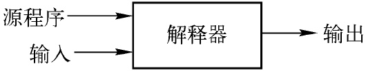
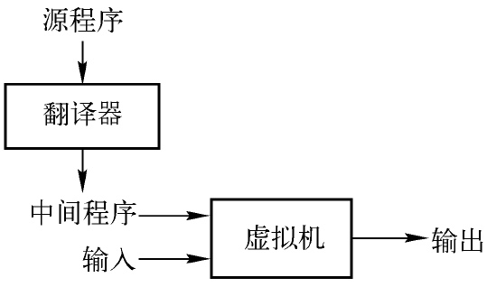
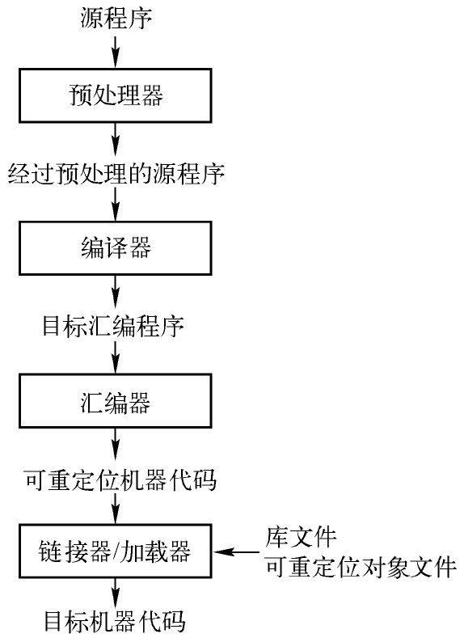
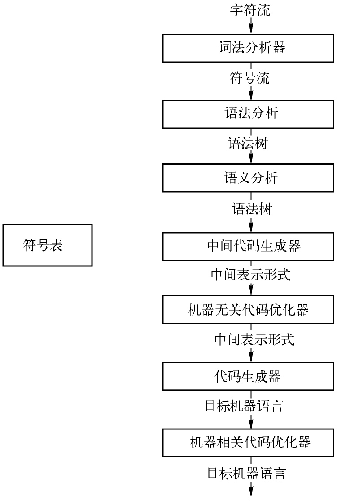
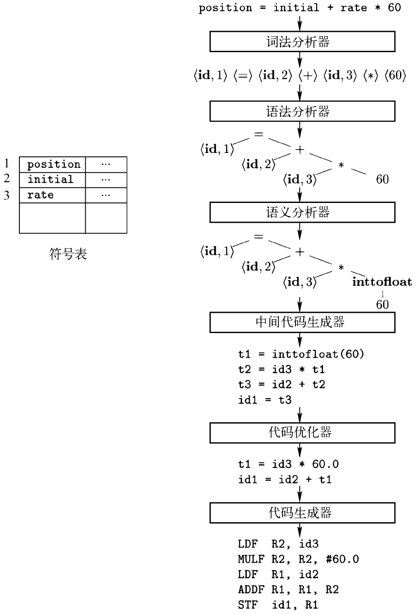
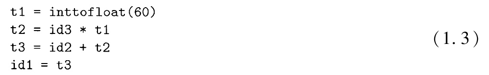
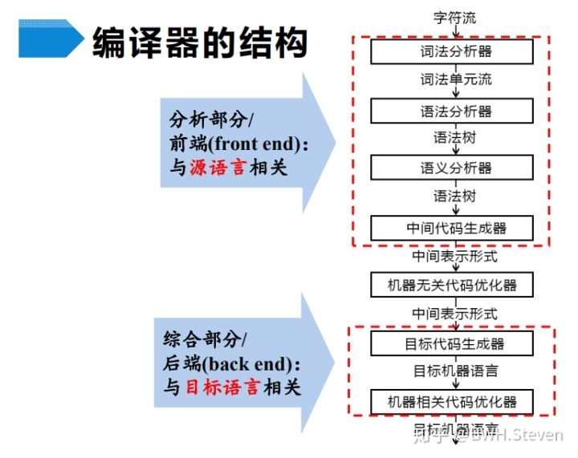

<编译原理>读书笔记
2020/07/22
posted in
编译原理
2020/07/22
posted in
编译原理
解释器(interpreter)直接利用源程序将输入映射成为输出.

对比编译器和解释器: 编译器生成的目标程序比解释器快, 解释器的错误诊断效果比编译器好
混合编译器. 如JAVA, JAVA源程序先被编译为字节码(bytecode), 而后由虚拟机对字节码进行解释

字节码的优点: 字节码有更好的跨平台的通用性
JIT编译器: 有些被称为即时 （just in time）编译器的Java编译器在运行中间程序处理输入的前一刻首先把字节码翻译成为机器语言，然后再执行程序
一个语言处理系统的流程

预处理器(preprocessor)负责两项工作:
一个编译器的各个步骤

词法分析(exical analysis)是编译器的第一个步骤, 又被称为扫描(scanning).
通过词法分析器将字符流转化成为有意义的词素(lexeme)的序列.
而词素会被表示为形如<token-name, attribute-value>的词法单元(token)
源程序
position = initial + rate * 60
经过词法分析后被表示为
一个赋值语句的翻译

语法分析(syntax analysis)是编译器的第二个步骤, 又被称为解析(parsing).
语法分析器使用由词法分析器生成的各个词法单元的第一个分量来创建树形的中间表示
语义分析器(semantic analyzer)使用
语法树和符号表中的信息来检查源程序是否和语言定义的语义一致。它同时也收集类型信息，并把这些信息存放在语法树或符号表中，以便在随后的中间代码生成过程中使用。
语义分析阶段的工作内容有:
中间表示在源程序翻译成目标代码的过程中, 可能有一个或多个
中间表示有多种形式, 如:语法树和三地址代码(three-address code), 其中语法树常用在语法分析和语义分析中
三地址代码,例如

有三个特点
机器无关的代码优化通过改进中间代码使代码更快或者更短/能耗更低
将中间表示形式映射为目标语言
合理分配寄存器以存放变量的值
记录源程序中使用的变量的名字，并收集和每个名字的各种属性有关的信息
在一个特定的实现中，多个步骤的活动可以被组合成一趟 （pass）

前端可以和不同的后端组合
一些常用的编译器构造工具包括：
语言的分类:
根据代分类
强制式 （imperative）语言
声明式 （declarative）语言
冯·诺伊曼语言 （von Neumann language）
面向对象语言 （object-oriented language）
脚本语言 （scripting language）